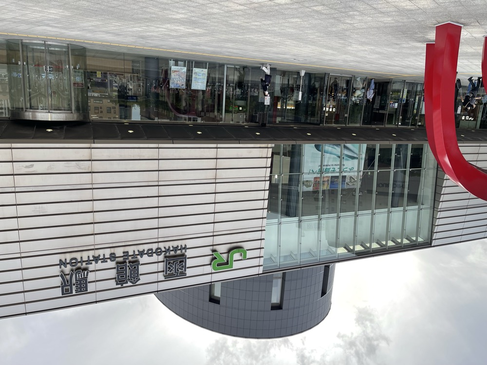
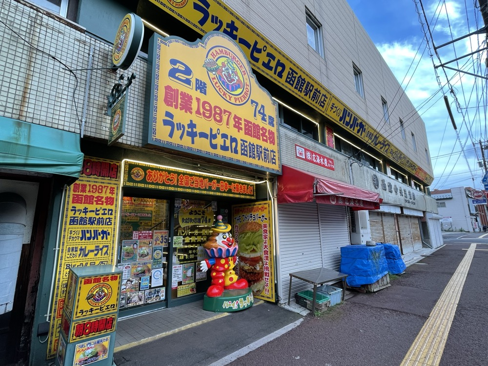
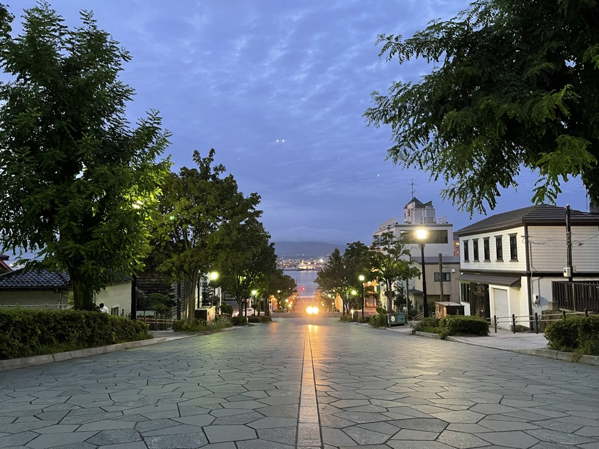
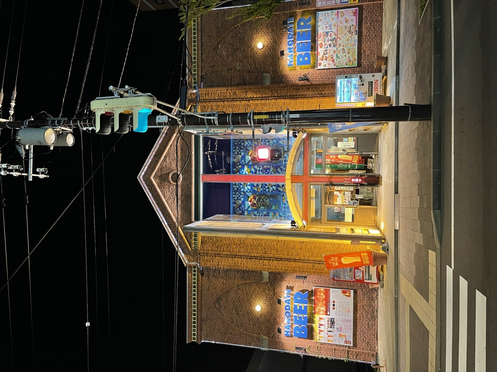
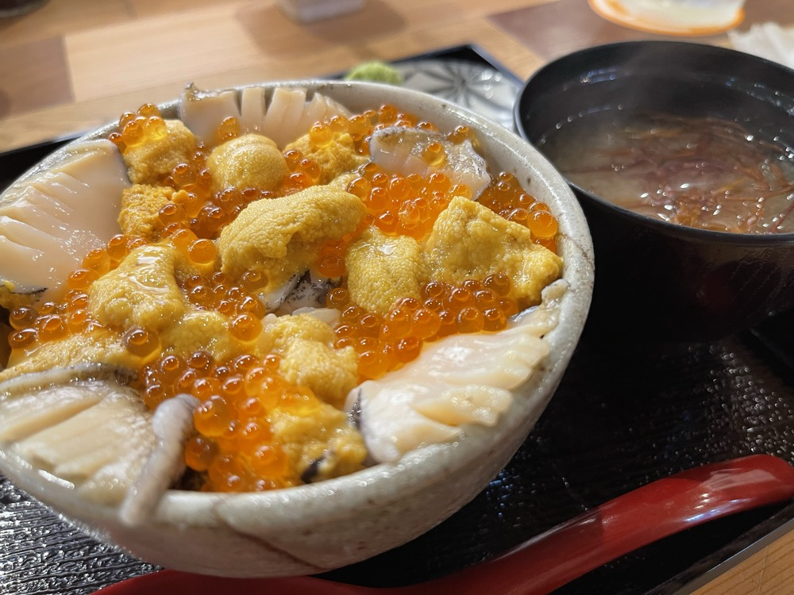

2022年8月、3泊4日の北海道車旅を計画した。前年にSR400で走った北海道を、今度は車でゆっくり巡ってみたかった。
初日は青森での仕事を終えてからの出発。夕方の北海道新幹線に飛び乗って、新青森から新函館北斗へ。そこからJRで函館駅に着いた頃には、夏の北海道もすっかり日が傾いていた。車を借りて街に出るのは翌朝から。今夜は函館の夜を歩く。
函館駅に降り立つ
函館駅は港町らしいモダンな駅舎で、ガラス張りのエントランスから街の空気が流れ込む。新幹線で東北と北海道がつながった今、函館は「飛行機やフェリー以外の選択肢」がある稀有な北の街になった。

ラッキーピエロで函館バーガー
函館に来たら避けて通れないのがラッキーピエロ。1987年創業、函館圏に十数店舗を構える地元密着のハンバーガーチェーンで、函館人にとってはマクドナルドより身近な存在だ。函館駅前店に入って、看板メニューのチャイニーズチキンバーガーを注文。揚げたてのチキンに甘辛いソースが絡んで、これは函館でしか食べられない味だ。

八幡坂——黄昏時の坂道
夕食前にひと歩き。函館の代表的な観光スポット、八幡坂へ向かった。元町エリアから函館港まで一直線に下る坂道で、坂の上から見ると港と海が一枚絵のように広がる。この日は黄昏時で、街灯がぽつりぽつりと点き始め、空はまだ青みを残していた。CMやドラマのロケ地としても有名な、函館の象徴的な風景だ。

函館山——世界三大夜景
日が完全に落ちてから、函館山のロープウェイで山頂へ。標高334mからの夜景は、ナポリ・香港と並ぶ「世界三大夜景」と称されるとおり、確かに圧巻だった。函館湾と津軽海峡に挟まれた砂州状の地形が、街の光をくびれた形に浮かび上がらせる。これは函館でしか見られない地形夜景だ。

HAKODATE BEERと海鮮丼
夜景を堪能して下山。続いて向かったのははこだてビール。函館港の煉瓦倉庫風の建物で、地元の地ビールを醸造している。明治館からほど近い金森赤レンガ倉庫エリアの一角にある。

晩御飯はやはり海鮮。函館の魚の質はやはり別格で、イカ・ウニ・イクラの三色丼に味噌汁という王道の組み合わせ。新幹線で着いた疲れも、北の海の恵みで一気に吹き飛んだ。

明日からはレンタカーで本格的に走り出す。羊蹄山、余市、小樽と、北海道らしい景色とウイスキー蒸溜所を巡る予定だ。
新幹線で着いた函館の夜は、いつもより少し濃く感じた。明日からのドライブの始まりに、ちょうどいい街の歓迎だった。